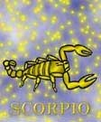

<html>
<head>
<title>Skórpio</title>
<script type="text/javascript" src="js/public.js"></script>
<script type="text/javascript" src="js/subpage.js"></script>
<script language="JavaScript1.1">
IMG_PICT="images/inte/horo/" 
horopict = ""
var subpage = new Array(
horopict+"Kettõs jegy, a tûz és víz jegye. Vagy nagyon jó, vagy nagyon rossz, középút nincs. Lendületes, vállalkozó kedvû, de passzivá is válhat, ezért kiismerhetetlen, reakciói kiszámíthatatlanok. Ha valamit elhatároz tûzõn- vízen keresztül megvalósítja, nem lehet eltéríteni a szándékától, hajlíthatatlan, makacs. Látszólag megbocsátó, de belül a megfelelõ pillanatot várja a visszavágásra. Erõszakos, nagyon bántóan tud másokkal szemben viselkedni, de ezt észre sem veszi. Ha figyelmeztetik õt, akkor csodálkozik, hogy õ nem akart senkit bántani. Mindenkibe belecsíp, beleszúr, õ maga túlérzékeny. Zárkózott, de imád más titkaiban kutatni. Megérzései kitûnõek, sõt nem ritkán megálmodja a bekövetkezõ eseményeket, vagy egy problémára az ideális megoldást. Kitûnõ értelmi képességei vannak, erre büszke, sõt beképzelt. Kitartó, sokoldalú, termékeny. A szerelemben nagyon szenvedélyes, ha valaki iránt lángra lobban, mindent elkövet, hogy meghódítsa, ebben az sem zavarja, hogy másnak vannak elkötelezve. Nem hûséges, de hajlamos a féltékenységre. Buja természetû. Nem ritka a pálfordulás az életében, csak gondol egyet és mindent otthagyva új életformát választ, de ezt hosszas belsõ kínlódások elõzik meg. Kemény jellem, olykor még magukkal szemben is kegyetlen. Nagy önmarcangoló. Víz-jegy, negatív töltés, stabil minõség. A Skorpió jegy uralkodó bolygója a Mars és a Plútó. ",
horopict+"A Plutó-tulajdonságok és a Skorpió jegy tulajdonságai sok hasonlóságot mutatnak. A Plutó jelképezi: a születés-halál, a megszületés és megújulás örök körforgását, valamint a mélyreható, kirobbanó erõt, a rejtélyes dolgokkal való foglalkozást. A víz-jegyekre jellemzõ érzelmi beállítottság: érzékenység, alkalmazkodóképesség, intuíció, a szétfolyásra való hajlam a Skorpió személyben párosul a fix elem tulajdonságaival: a szilárd kitartással és a határozottsággal. Mivel a víz ingadozó és labilis, ezért van az, hogy a Skorpió ember lelke mélyén harcban áll egymással a két ellentétes irányzat miatt. A negatív töltés a külvilág benyomásaira való befogadóképességet jelenti. A pozitív töltésû Mars-uralkodó viszont a kifelé hatásra törekszik. Így ez a két hatás is belsõ feszültségforrásként hat. A negatív tulajdonság leginkább a jellem mélységében és az erõ tartalékolásában jelentkezik. A tüzes Mars és a víz ellentéte. Megindul a harc a bensõben a lélek mélyén. Mindkét hatás elementáris, s mivel a két elem keveredni nem képes, hol az egyik, hol a másik kerekedik felül, szélsõségek közt rángatva lelket-testet. A vulkán kirobbanó ereje s a tenger mélysége lakozik a Skorpió emberben. A tüzes marsikus energia és akarat az érzelmi beállítottságot szenvedélyessé teszi. Hatalmas energiával képes küzdeni egy számára érzelmileg fontos ügyért. Önfeláldozásra is képes a szeretett személyért. ",
horopict+"Szívós, kitartó akarattal, kiváló szellemi, értelmi adottságaival képes megvalósítani önérdekeit. Ezt azonban nem lenne helyes összetéveszteni az önzéssel. Képes rá, hogy uralja önmagát, s így közvetve uralja a helyzeteket s a gyengébb erejû embereket. A földi dolgoktól való elszakadás vágya, s a test vágyai közt vívódik lelke. A látszólag hûvös, tartózkodó magatartás azonban csak védekezés, hisz érzelmeiben oly könnyen sebezhetõ az ember. Hajtja a rejtett, titokzatos dolgok megismerésének vágya. Figyelmét az egyik legtitokzatosabb valóság- a lélek felé fordítja. Ahogy fokozatosan feltárulnak elõtte saját lelke pozitívumai és negatívumai, hatni akarása önnevelést, önfejlesztést eredményez. Újból és újból megméri, keresi, kutatja önmagát. E jegy szülötte intuitív, képes arra, hogy elõre megérezzen eseményeket. Belülrõl inspirálja valami, hogy a dolgok mélyére nézzen, s a véges mögött keresse a végtelent, az anyag mögött a szellemet, az ember titkát- a lét titkát. Sok Skorpió ember fordul érdeklõdéssel a misztikum felé. Szívesen kutatja a másik ember lelkének titkait, de a saját titkát nem osztja meg másokkal. Igazi érzéseit is legszívesebben eltitkolja. Ez visszavezethetõ a víz-jegyek érzékenységére. A félelme a sérüléstõl támadva védekezõ magatartáshoz vezethet. A rajta esett sérelmet nem egykönnyen felejti el, s a megbocsátásig hosszú az út, mely komoly önlegyõzést kíván. ",
horopict+"A szócsatákban különösen otthon érzi magát. Sokszor észre sem veszi, hogy csíp, szúr és vág. Testi-lelki regenerálódását a mély alvás segíti elõ. A saját útján szeret járni, a kényszert nem bírja, nem tûri. Igényli az elismerõ szavakat, a dicséretet, a hízelgést is kedveli, de átlát az üres hízelgõ szavakon, s a hízelgõt nem tiszteli. Érzelmekkel teli lelkét gyakran tépázzák viharok. Ha akaratát nem tudja érvényesíteni, dühkitörésekkel reagál. Hogy energiáit felhasználhassa, tevékenységre kell fogni. Nem szabad figyelmen kívül hagyni, hogy itt emocionális energiáról van szó, ezért ennek levezetése is érzelmi csatornákon keresztül történhet: emberekre van szüksége, akiket szerethet. A Skorpió ember számára a szerelem nem könnyû kaland, hanem felkavaró, felrázó élmény. Érzelmei mélységénél fogva a szerelmet, mint misztériumot éli meg. Fontos szerepet játszik mind az érzelmi, mind a testi oldal. A jel kettõssége az erotikában is megmutatkozik, mert vagy leesik a mélységbe, vagy pedig éteri magasságokba emelkedve olvad fel benne. Szexulitása lángolóan szenvedélyes. A Skorpió no erõs, kemény karakter, akit a szerelem és a család mellett hajt a munkában való elõrejutás vágya is. Vágya az átformálás. Hajlama, hogy rejtett dolgok után kutasson, arra ösztönzi, hogy a tudomány, az ipar, a lelki élet területén tegyen felfedezéseket. Sokoldalú, kitartó, termékeny munkaerõ. A Skorpió mint a víz-jegyûek általában, vonzódik a mûvészetekhez. ",
horopict+"Kedveli az aktív sportokat. Örömét leli minden elfoglaltságban, ami a tengerhez, vízhez kapcsolódik. Természetes hajlamainak gátlását okozza, ha túlságosan \"földhözragadt\" életre kényszerítik. A Skorpió-tulajdonságok eltúlzása vagy torzulása olyan szenvedélyeket jelent, melyeket nem lehet eltéríteni. A mélyen parázsló harag, a szeretet gyûlöletbe fordulása, a szerelmi féltékenység katasztrófához vezethet. A túlzásba vitt titkolózás eredménye a keserû félreértés. Az elfojtott vágyak, amelyeket csak a tudatalattiban hatnak, egyszer csak kitörnek. Az alacsonyrendû Skorpió vágyai túlzott kiélésével bünteti meg magát. Erejének és akaratának érvényesítése a másik igényeinek figyelmen kívül hagyásával az erõszakosság és önzés felé viheti. A bántást, a sértést megbocsátani nem tudó magatartás bosszúállóvá teheti, s ennek gyümölcse a lelki békétlenség. ",
horopict+"<b>Bolygója:</b> a Mars<br>"
+"<b>Eleme:</b> a víz<br>"
+"<b>Természete:</b> szilárd<br>"
+"<b>Erényei:</b> határozott, kitartó, szorgalmas, kreatív, gyors észjárású, szellemes<br>"
+"<b>Hibái:</b> makacs, kiszámíthatatlan, titkolódzó, gunyoros, bosszúálló, féltékeny<br>"
+"<b>Testrésze:</b> a nemiszerv<br>"
+"<b>Betegségre való hajlam:</b> nemi betegségek, hólyag- és húgycsõgyulladás, vese problémák, prosztatabántalmak, petefészek-gyulladás<br>"
+"<b>Védõkövek:</b> malachit, sárgatopáz<br>"
+"<b>Szerencsekövek:</b> karneol, mélyvörös gránát, akvamarin, opál, topáz"
);
</script>
</head>
<BODY background="images/public/background/bg1.jpg">
<script language="JavaScript1.1">
	firstdraw("SKORPIÓ október 24. - november 22.");
</script>
</body>
</html>